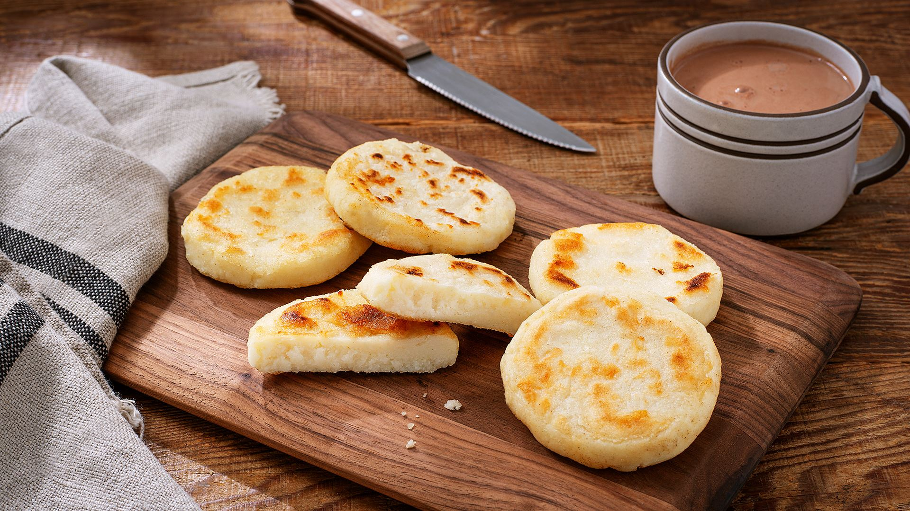

Arepas

Description
A very common Venezuelan meal prepared to eat anytime from breakfast to dinner with family and friends
You can eat it with almost anything else, like cheese, ham, bacon, eggs, whatever you like the most!
Ingredients
Steps
- Pour a cup of water into a bowl
- Add 2 ounces of salt
- Put the flour into the bowl and mix it up with the water
- Once the mixture is ready, take some and give it the form of a circle
- Finally, put the mixture over a pan and let it cook for about ten minutes